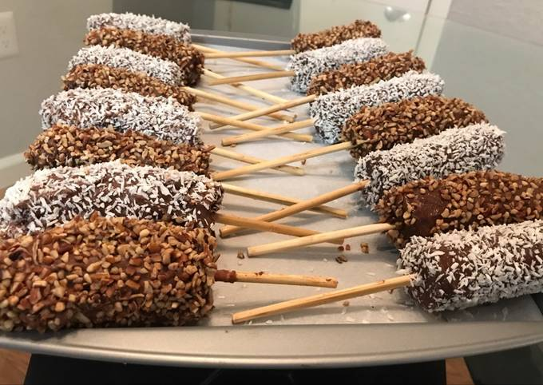

Chocobanana

Descripción
postre delicioso y sencillo (saludable?) elaborado de bananas, chocolate y
opcionalmente frutos secos
Ingredientes
- bananas
- chocolate negro
- frutos secos
Pasos
- Congele las bananas
- Derrita el chocolate y déjelo enfriar a temperatura ambiente
- Sumerja las bananas en el chocolate eliminando el exceso
- Espolvoree los frutos secos en las bananas
- Congele las bananas nuevamente